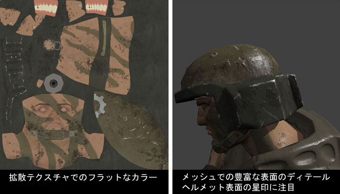
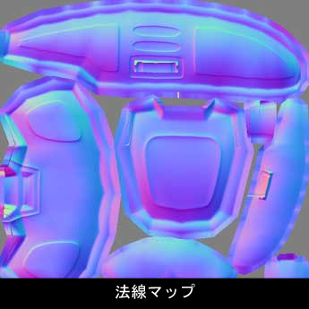
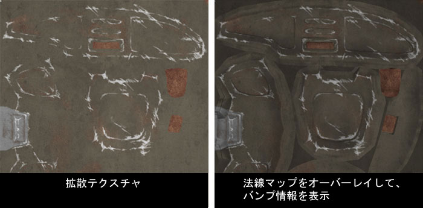
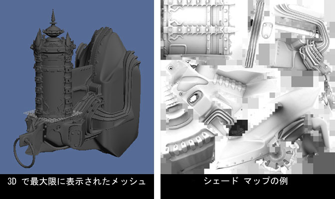
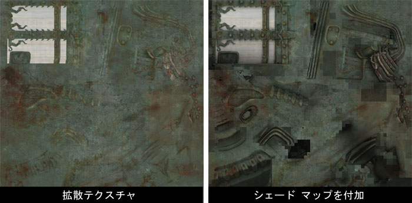

UDN
Search public documentation:
CreatingTexturesJP
English Translation
中国翻译
한국어
Interested in the Unreal Engine?
Visit the Unreal Technology site.
Looking for jobs and company info?
Check out the Epic games site.
Questions about support via UDN?
Contact the UDN Staff
中国翻译
한국어
Interested in the Unreal Engine?
Visit the Unreal Technology site.
Looking for jobs and company info?
Check out the Epic games site.
Questions about support via UDN?
Contact the UDN Staff
テクスチャ作成のヒント
はじめに
UnrealEngine3 のマテリアル システムでは、複数のテクスチャを使用し複雑なマテリアルを作ることが出来ます｡バンプマップを使うと、テクスチャの見た目を変えたり、テクスチャの作成方法そのものを変化させることが出来ます｡本書では、新しいテクノロジーに応じて、テクスチャを用いる際に使用できるテクニックをいくつか検証していきます｡バンプマップ
シェーディングではない色のディフューズの使用
これまでは、良いテクスチャ マップを作成する際に、衣服のしわ・機械のボルトなど、深みをうまく出すことが重要でした。これらはポリゴンを使ってモデリングするには細かすぎるため、ペイントしたシャドウやハイライトを代用して立体感を出していました｡ UnrealEngine3 では、バンプマッピングを使用して、マテリアルに相当量の光加減を加えることができます。その結果、ディフューズテクスチャにペイントしたシェーディングを使用する必要が少なくなります。精密な表面の詳細を目的としたバンプマップに依存する中、ディフューズテクスチャは、物足りなくなるかもしれません｡セルフシャドーイングバンプをする球面調和マップ では特にそうです。 下に見えるのは、戦士の頭のディフューズしたテクスチャと、UnrealEngine3 で作成したマテリアルです｡ディフューズテクスチャは、陰影情報が欠けています｡すべてのシェーディングは、法線マップを使用しレンダリングされます｡
ヘルメットの傷やへこみは、バンプマップ にのみ存在することが分かります｡浮き上がった星のエンブレムもそうであることに気をつけてください｡ディフューズマップには、ハイライトもシャドウも存在しません。法線マップ
Photoshop での法線マップの使用
ディフューズは バンプマップで表現されるため、ディフューズマップの作成中には完成品をイメージしにくい場合があります。その場合は次のテクニックを使用します：
- 法線マップをレイヤースタックの上部にある新しいレイヤーにペーストします｡
- "Desaturate" (非飽和) にします。
- レイヤーのプレンド タイプを"Multiply" (乗算) にします。
- 必要に応じて不透明度を微調整します。

シェードマップ
単色名ディフューズテクスチャでは、十分なシェーディング細部が表現できないことに気づくでしょう。もちろん、ただ単にペイントしたりできますが、必要ではありません。シェードマップは、球面調和マップ (.SHM)から生成されます。これにはまず .SHM が必要です｡作成方法については、 ImportingStaticMeshTutorialJP (静的メッシュチュートリアルのインポート) の「Using SHTools」 (SHToolsの使用) の項を参照してください｡詳細は、 SHTools参照 をご覧ください。 下は、ランプのイメージとそのシェード マップです：
シェードマップの作成
3D Studio Max
更なる情報については シェード マップ作成のテクニック をご覧ください。SHTools
- ..SHM をSHツールがある ディレクトリにコピーします(恐らく c:\SHTools\Bin）。
- コマンド ライン、(DOS ウィンドウ)を開き、ディレクトリへナビゲートします｡
- 以下を入力します：
MeshProcess CreateShadeMap "input.SHM" "output.TGA"
input (入力) は .SHM の名称で、 output (出力) は新しい陰影 マップに望ましい名称です｡
陰影 マップは、オブジェクトが四方から一面に照らされているよう作成されます｡同様に、床のひびは室内の光の向きに関係なく暗く、織り込んだモデルの部分は、前方に飛び出ている部分よりも暗くなっています｡シェード マップでピクセル化した部分は、オブジェクトにマップされておらず表示されません。
Mental Ray Ambient Occlusion を使用した陰影 マップ
シェードマップを簡単にかつ最良の方法で作成するには、Mental ray を通して ambient occlusion シェーダーを使用することです。モデルの Diffuse 入力にシェーダーを適用し、自光性100% に設定します｡dirtmap (ダートマップ)とも呼ばれる ambient occlusionは、光を必要とせず、完璧に方向性のないシェーディングを作成します｡レンダラーが mental ray に設定されていることを確認して下さい｡そうでないとシェーダーが露出しません｡シェードマップの適用
このシェードマップを、上記の法線マップと同様の方法でディフューズマップにペーストします。- レイヤーの最上層にある新しい Photoshop レイヤーにシェードマップをペーストします。
- レイヤーのプレンド タイプを[Multiply] (乗算) にします。
- 必要に応じて不透明度を微調整します。

以上です。UnrealEngine3 にインポートして試行してください。シェーディングが強すぎる場合は、シェードマップレイヤーの不透明度を弱めてください。